Your direction: the cards extend from the screen edge and overflow the page; only the visible inner edge is rounded.
The outer edge has no border and no radius. The inner edges stay at x 530 and x 1390, so the speed area keeps the same room.
Every shot passes the margin check (capture.js: 12 shots).
The rpm and boost numbers show round 34 option A (corner stack) until you pick; option B still works.
Pick: B, locked (2026-10-30). The content centers in the visible card. B is the default; ?fit=a keeps option A for reference. Round 36 fixes the alignment.
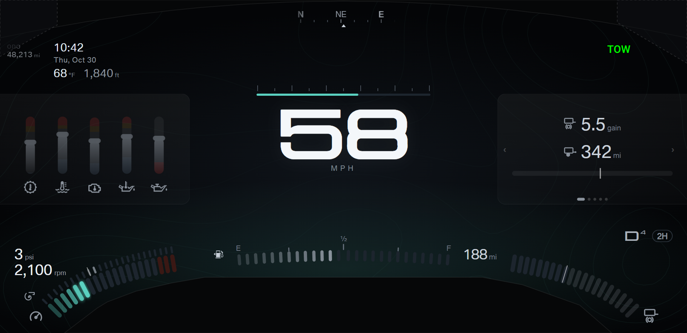
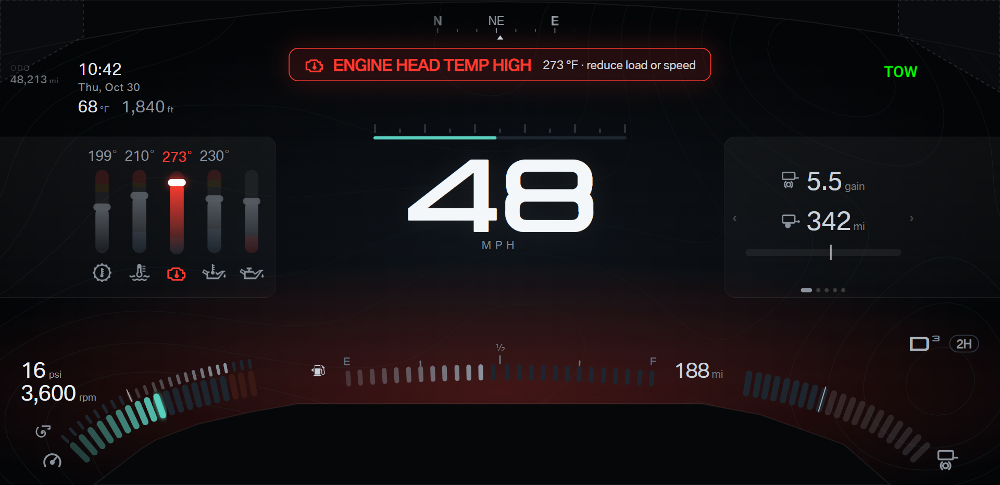
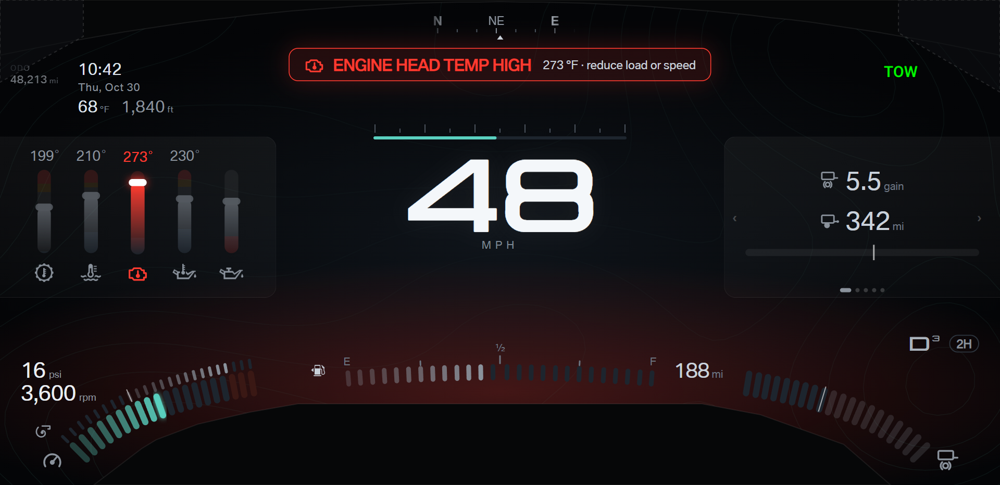
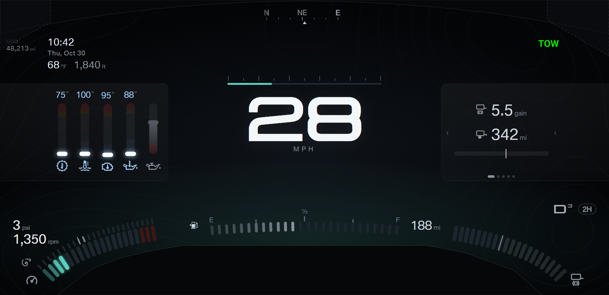
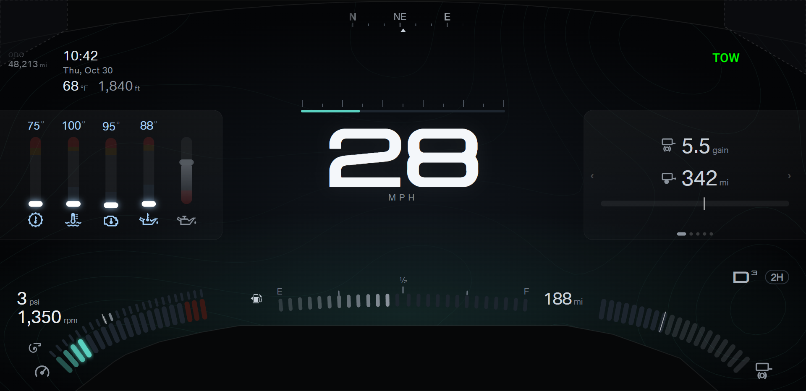
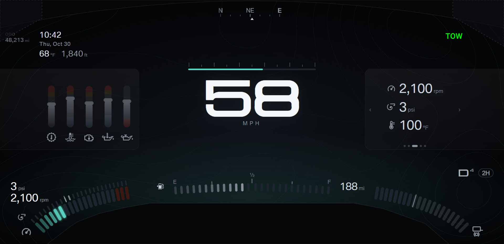
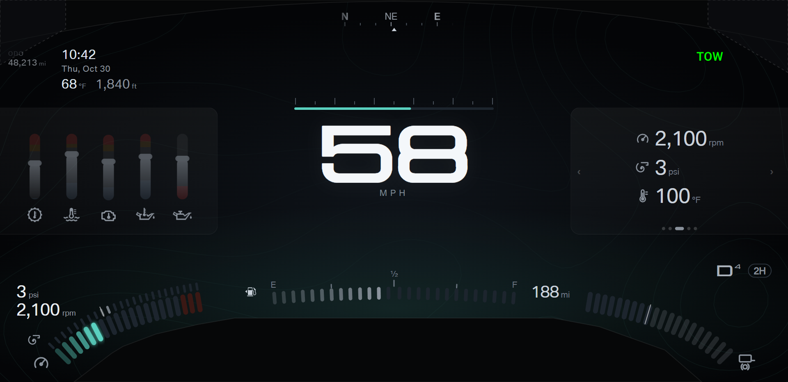
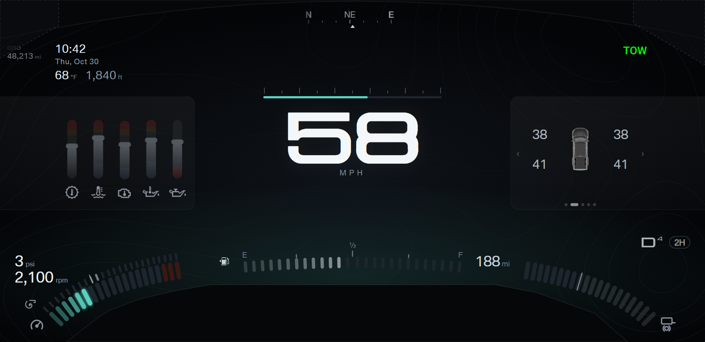
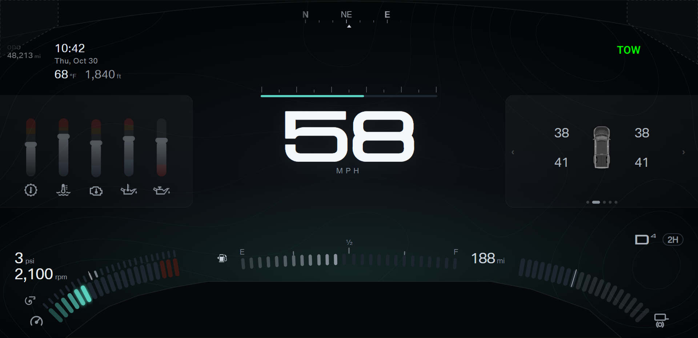
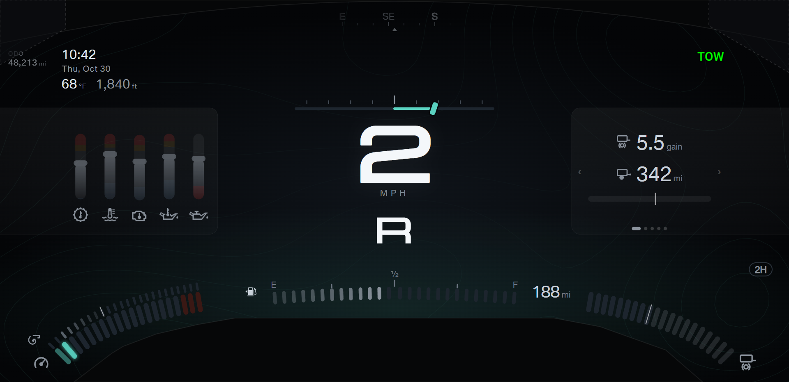
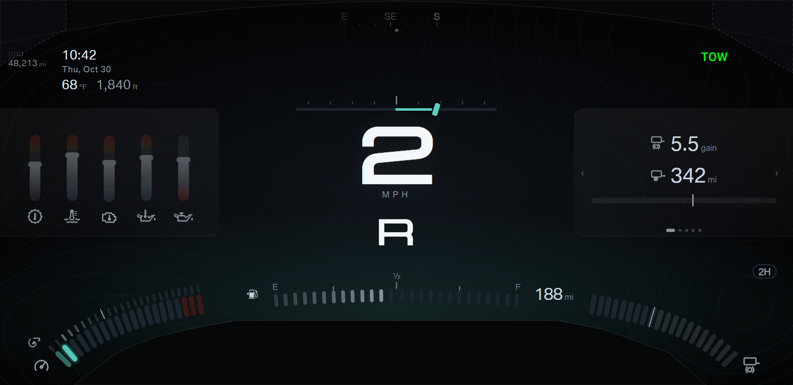